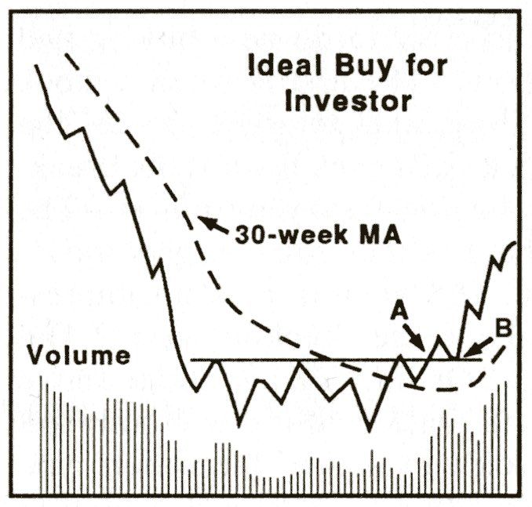
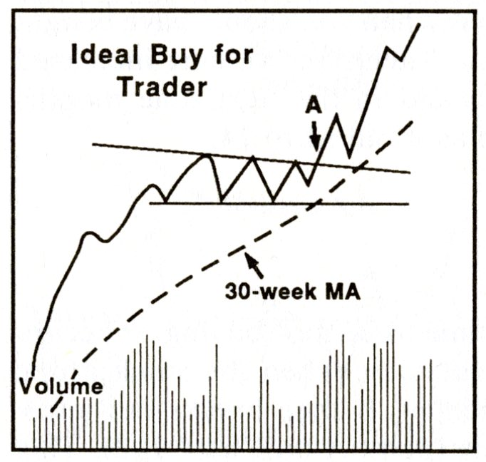

下圖是動能交易者常常關注的 Trend Continuation Setup ，俗稱 Bull Flag，亦有人稱為 High-tight-flag。要注意，坊間書本教學崇尚 「標準形態」，但我認為 「原則」 比 「形狀」 更為重要。因為實際市場中股價出現的 「形態」 多數並不典型。由於真實世界出現 variations 是常態，所以讀完書後面對市場 「真相」 才如此困惑。（以下所述概念，全部都在此頻的 【交易學習筆記】 解釋過）


Trend Continuation Setup 原則

已經運行至少短線的 Strong Uptrend。

(未必全部) 多數長期處於 10日 或 20日 EMA 上，如果低於一般只是短暫或偶然。

何時去 “觀察”/ not to “觀察” (純粹作為觀察參考，風險包括市場波動和假訊號)：

最理想是發生在整浪發展的第 1 或 2 個 base。第 3 或 4 個 base 失敗率可能提升。(按：以上僅為歷史模式討論，不保證適用於未來市場)

不論第幾個 base ，當出現較長時間、或足夠深的整固 (Consolidation)，計數第幾個 base 就可以 reset 從頭計起。(至於幾長時間或幾深才夠，抱歉確實沒有單一標準，因為每隻股票波幅不同，幅度只能以日常波幅做判斷，而時間性，Pradeep 曾指大約兩個月或以上的整固，就開始叫做 significant）。

成功機率可能增加之大市情景 (任何一個，僅供參考，不保證結果)：調整浪剛完回升、市寬爆發、持續 uptrend。

Anticipation：Form base 之際，拉回到或者接近 area of value 就 “觀察”。

Breakout: 突破短期 trendline 時立即 “觀察”。

以上沒有圖示所講的 “fake-out”：即是 form base 之際，因為某些宏觀或大市消息、個別公司消息、又或者毫無原因，股價突然短暫插穿 base (liquidity grab pattern)，然後快速修復，察覺到這個 pattern 就 “觀察”。

Breakout pullback reversal：股價 breakout 後，價格拉回至前突破點、或後續 area of value 時 “觀察”。

任何觀察方式都有人採用，但多數情況，交易者為了得到更好 risk/reward ，會多考慮觀察 anticipation、 fake-out 、或 breakout pullback reversal ，而限於大市出現 “elated mood” 或呈現 “animal spirit” 時，才 breakout 時觀察。請注意，這些觀察不構成建議，實際應用需考慮個人風險。

假如 form base 的形態是 “wedging up”，同時短線技術指標 (e.g 9日 KD 指標) 呈 overbought 訊號，可能注意在其他股票會是更明智之選 (僅為一般觀察)。


These two setups are my bread and butter. When the market is healthy I'm identifying the best Stage 2 breakouts using Stan Weinstein's criteria for a high quality Stage 2 breakout.


